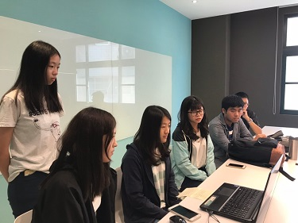
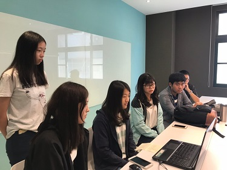
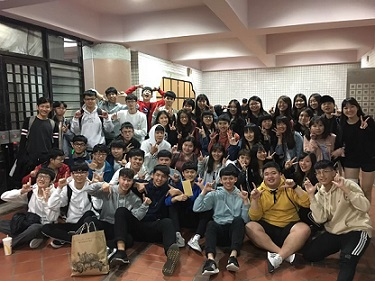
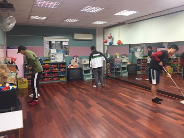
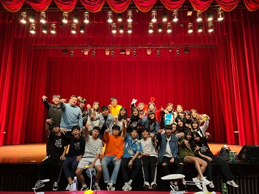

大一上 企業概論
第一次弄這種專案，目標是要像個企業一樣賣東西，從進貨、宣傳、擺攤什麼都自己來，弄得很累，每周還要多挪時間開會。不過到期末總算是達成目標時，成就感都有了，有種辛苦沒白費的感覺。
Html5/Css3
75%
Java
65%
Python
70%
C#
60%
PhotoShop
60%
第一次弄這種專案，目標是要像個企業一樣賣東西，從進貨、宣傳、擺攤什麼都自己來，弄得很累，每周還要多挪時間開會。不過到期末總算是達成目標時，成就感都有了，有種辛苦沒白費的感覺。
第一次參加資管之夜，雖然是參加幕後。不過那種一起做好一件事的感覺還蠻棒的。最後看到班上拿第一名，也一起感到開心。
這在上學期就看到乙班在弄，比企概輕鬆點，整體來說比較像社區服務，我們這組是去中原幼兒園幫忙，剛好碰到他們比較忙的時期，搞了一堆活動，其實還蠻好玩的，想到自己幼稚園時期的樣子。
第二次參加，還是幕後，還是默默的去做道具，然後默默的看班上又拿第一，真的偏厲害欸。那個開心的感覺還是沒變。
